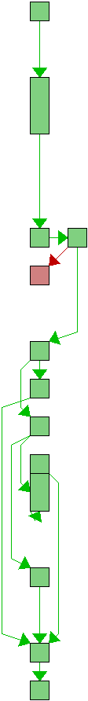
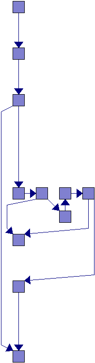
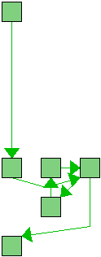

source src/config_cache.c
| Line | Flow | Count | Block(s) | Source |
|---|---|---|---|---|
| 1 | - | /* | ||
| 2 | - | * Copyright (C) the libgit2 contributors. All rights reserved. | ||
| 3 | - | * | ||
| 4 | - | * This file is part of libgit2, distributed under the GNU GPL v2 with | ||
| 5 | - | * a Linking Exception. For full terms see the included COPYING file. | ||
| 6 | - | */ | ||
| 7 | - | |||
| 8 | - | #include "common.h" | ||
| 9 | - | |||
| 10 | - | #include "futils.h" | ||
| 11 | - | #include "repository.h" | ||
| 12 | - | #include "config.h" | ||
| 13 | - | #include "git2/config.h" | ||
| 14 | - | #include "vector.h" | ||
| 15 | - | #include "filter.h" | ||
| 16 | - | |||
| 17 | - | struct map_data { | ||
| 18 | - | const char *name; | ||
| 19 | - | git_configmap *maps; | ||
| 20 | - | size_t map_count; | ||
| 21 | - | int default_value; | ||
| 22 | - | }; | ||
| 23 | - | |||
| 24 | - | /* | ||
| 25 | - | * core.eol | ||
| 26 | - | * Sets the line ending type to use in the working directory for | ||
| 27 | - | * files that have the text property set. Alternatives are lf, crlf | ||
| 28 | - | * and native, which uses the platform's native line ending. The default | ||
| 29 | - | * value is native. See gitattributes(5) for more information on | ||
| 30 | - | * end-of-line conversion. | ||
| 31 | - | */ | ||
| 32 | - | static git_configmap _configmap_eol[] = { | ||
| 33 | - | {GIT_CONFIGMAP_FALSE, NULL, GIT_EOL_UNSET}, | ||
| 34 | - | {GIT_CONFIGMAP_STRING, "lf", GIT_EOL_LF}, | ||
| 35 | - | {GIT_CONFIGMAP_STRING, "crlf", GIT_EOL_CRLF}, | ||
| 36 | - | {GIT_CONFIGMAP_STRING, "native", GIT_EOL_NATIVE} | ||
| 37 | - | }; | ||
| 38 | - | |||
| 39 | - | /* | ||
| 40 | - | * core.autocrlf | ||
| 41 | - | * Setting this variable to "true" is almost the same as setting | ||
| 42 | - | * the text attribute to "auto" on all files except that text files are | ||
| 43 | - | * not guaranteed to be normalized: files that contain CRLF in the | ||
| 44 | - | * repository will not be touched. Use this setting if you want to have | ||
| 45 | - | * CRLF line endings in your working directory even though the repository | ||
| 46 | - | * does not have normalized line endings. This variable can be set to input, | ||
| 47 | - | * in which case no output conversion is performed. | ||
| 48 | - | */ | ||
| 49 | - | static git_configmap _configmap_autocrlf[] = { | ||
| 50 | - | {GIT_CONFIGMAP_FALSE, NULL, GIT_AUTO_CRLF_FALSE}, | ||
| 51 | - | {GIT_CONFIGMAP_TRUE, NULL, GIT_AUTO_CRLF_TRUE}, | ||
| 52 | - | {GIT_CONFIGMAP_STRING, "input", GIT_AUTO_CRLF_INPUT} | ||
| 53 | - | }; | ||
| 54 | - | |||
| 55 | - | static git_configmap _configmap_safecrlf[] = { | ||
| 56 | - | {GIT_CONFIGMAP_FALSE, NULL, GIT_SAFE_CRLF_FALSE}, | ||
| 57 | - | {GIT_CONFIGMAP_TRUE, NULL, GIT_SAFE_CRLF_FAIL}, | ||
| 58 | - | {GIT_CONFIGMAP_STRING, "warn", GIT_SAFE_CRLF_WARN} | ||
| 59 | - | }; | ||
| 60 | - | |||
| 61 | - | static git_configmap _configmap_logallrefupdates[] = { | ||
| 62 | - | {GIT_CONFIGMAP_FALSE, NULL, GIT_LOGALLREFUPDATES_FALSE}, | ||
| 63 | - | {GIT_CONFIGMAP_TRUE, NULL, GIT_LOGALLREFUPDATES_TRUE}, | ||
| 64 | - | {GIT_CONFIGMAP_STRING, "always", GIT_LOGALLREFUPDATES_ALWAYS}, | ||
| 65 | - | }; | ||
| 66 | - | |||
| 67 | - | /* | ||
| 68 | - | * Generic map for integer values | ||
| 69 | - | */ | ||
| 70 | - | static git_configmap _configmap_int[] = { | ||
| 71 | - | {GIT_CONFIGMAP_INT32, NULL, 0}, | ||
| 72 | - | }; | ||
| 73 | - | |||
| 74 | - | static struct map_data _configmaps[] = { | ||
| 75 | - | {"core.autocrlf", _configmap_autocrlf, ARRAY_SIZE(_configmap_autocrlf), GIT_AUTO_CRLF_DEFAULT}, | ||
| 76 | - | {"core.eol", _configmap_eol, ARRAY_SIZE(_configmap_eol), GIT_EOL_DEFAULT}, | ||
| 77 | - | {"core.symlinks", NULL, 0, GIT_SYMLINKS_DEFAULT }, | ||
| 78 | - | {"core.ignorecase", NULL, 0, GIT_IGNORECASE_DEFAULT }, | ||
| 79 | - | {"core.filemode", NULL, 0, GIT_FILEMODE_DEFAULT }, | ||
| 80 | - | {"core.ignorestat", NULL, 0, GIT_IGNORESTAT_DEFAULT }, | ||
| 81 | - | {"core.trustctime", NULL, 0, GIT_TRUSTCTIME_DEFAULT }, | ||
| 82 | - | {"core.abbrev", _configmap_int, 1, GIT_ABBREV_DEFAULT }, | ||
| 83 | - | {"core.precomposeunicode", NULL, 0, GIT_PRECOMPOSE_DEFAULT }, | ||
| 84 | - | {"core.safecrlf", _configmap_safecrlf, ARRAY_SIZE(_configmap_safecrlf), GIT_SAFE_CRLF_DEFAULT}, | ||
| 85 | - | {"core.logallrefupdates", _configmap_logallrefupdates, ARRAY_SIZE(_configmap_logallrefupdates), GIT_LOGALLREFUPDATES_DEFAULT}, | ||
| 86 | - | {"core.protecthfs", NULL, 0, GIT_PROTECTHFS_DEFAULT }, | ||
| 87 | - | {"core.protectntfs", NULL, 0, GIT_PROTECTNTFS_DEFAULT }, | ||
| 88 | - | {"core.fsyncobjectfiles", NULL, 0, GIT_FSYNCOBJECTFILES_DEFAULT }, | ||
| 89 | - | }; | ||
| 90 | - | |||
| 91 |  | 50135 | 2 | int git_config__configmap_lookup(int *out, git_config *config, git_configmap_item item) |
| 92 | - | { | ||
| 93 | 50135 | 2 | int error = 0; | |
| 94 | 50135 | 2 | struct map_data *data = &_configmaps[(int)item]; | |
| 95 | - | git_config_entry *entry; | ||
| 96 | - | |||
| 97 | 50141 | 2,3 | if ((error = git_config__lookup_entry(&entry, config, data->name, false)) < 0) | |
| 98 | ##### | 4 | return error; | |
| 99 | - | |||
| 100 | 50141 | 5 | if (!entry) | |
| 101 | 38838 | 6 | *out = data->default_value; | |
| 102 | 11303 | 7 | else if (data->maps) | |
| 103 | 865 | 8,8 | error = git_config_lookup_map_value( | |
| 104 | 865 | 8,8 | out, data->maps, data->map_count, entry->value); | |
| 105 | - | else | ||
| 106 | 10438 | 9 | error = git_config_parse_bool(out, entry->value); | |
| 107 | - | |||
| 108 | 50141 | 10 | git_config_entry_free(entry); | |
| 109 | 50131 | 11 | return error; | |
| 110 | - | } | ||
| 111 | - | |||
| 112 |  | - | 2 | suppressed: function cannot be solved git_repository__configmap_lookup (automatic due to inconsistent arc counts in .gcda files)int git_repository__configmap_lookup(int *out, git_repository *repo, git_configmap_item item) |
| 113 | - | { | ||
| 114 | - | 2 | suppressed: function cannot be solved git_repository__configmap_lookup (automatic due to inconsistent arc counts in .gcda files) *out = repo->configmap_cache[(int)item]; | |
| 115 | - | |||
| 116 | - | 2 | suppressed: function cannot be solved git_repository__configmap_lookup (automatic due to inconsistent arc counts in .gcda files) if (*out == GIT_CONFIGMAP_NOT_CACHED) { | |
| 117 | - | int error; | ||
| 118 | - | git_config *config; | ||
| 119 | - | |||
| 120 | - | 3-6 | suppressed: function cannot be solved git_repository__configmap_lookup (automatic due to inconsistent arc counts in .gcda files) if ((error = git_repository_config__weakptr(&config, repo)) < 0 || | |
| 121 | - | 5 | suppressed: function cannot be solved git_repository__configmap_lookup (automatic due to inconsistent arc counts in .gcda files) (error = git_config__configmap_lookup(out, config, item)) < 0) | |
| 122 | - | 7 | suppressed: function cannot be solved git_repository__configmap_lookup (automatic due to inconsistent arc counts in .gcda files) return error; | |
| 123 | - | |||
| 124 | - | 8 | suppressed: function cannot be solved git_repository__configmap_lookup (automatic due to inconsistent arc counts in .gcda files) repo->configmap_cache[(int)item] = *out; | |
| 125 | - | } | ||
| 126 | - | |||
| 127 | - | 9 | suppressed: function cannot be solved git_repository__configmap_lookup (automatic due to inconsistent arc counts in .gcda files) return 0; | |
| 128 | - | } | ||
| 129 | - | |||
| 130 |  | 11574 | 2 | void git_repository__configmap_lookup_cache_clear(git_repository *repo) |
| 131 | - | { | ||
| 132 | - | int i; | ||
| 133 | - | |||
| 134 | 173610 | 2-4 | for (i = 0; i < GIT_CONFIGMAP_CACHE_MAX; ++i) | |
| 135 | 162036 | 3 | repo->configmap_cache[i] = GIT_CONFIGMAP_NOT_CACHED; | |
| 136 | 11574 | 5 | } | |
| 137 | - |